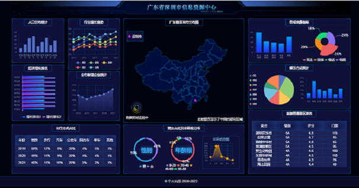

项目经历
1、天蓝云笔记
- 项目介绍： 该项目是以 Evernote 云笔记 mac 客户端版的 ui 为原型，做的一款线上的云笔记 webapp 产品。
主要实现了登录、注册、笔记本的创建、修改、
删除，笔记的 markdown 编辑、删除到回收站、markdown 预览、回收站管理等功能。
- 技术栈：Vue、Vue-router、Vuex、Element-ui、Webpack、Es6
- 预览项目: 点击查看
项目源码: 点击查看
2、MangoUI
- 项目介绍： 该项目是一款界面简洁基于 Vue3.0 开发的UI 组件库，主要是参照了 Ant Design、Element UI 等 UI 库思路，
目前已支持Switch、Button、Dialog、
Tabs等UI组件，其他组件正在开发中。使用了setup、onMounted、ref
等composition API,并支持PC和手机端浏览。
- 技术栈：Vue3、Vue-router、Vuex、Es6、TypeScript、SCSS
- 预览项目: 点击查看
项目源码: 点击查看
3、大屏可视化

- 项目介绍： 该项目页面布局使用了 Grid 和 Flex 布局，为了适应所有屏幕，
使用了动态 rem 方案，项目中包含的图例有柱形图、
折线图、饼图、地图和表格等，
并且所有图例都可以实时更新数据并辅以动画交互。通过这个项目，我掌握了大屏可视化项目的制作技巧。
- 技术栈：Vue、Vue-router、Echarts 、Grid、Rem
- 预览项目: 点击查看
项目源码: 点击查看
4、精灵记账

- 项目介绍：精灵记账是一款极简的记账产品，也是一款基于Vue、
TypeScript实现的单页面应用。
用户可以进行快速记账，通过图表查看自己的消费习惯。主要实现记账、
标签管理、数据统计、
账单展示、可视化图表等功能。
- 技术栈：Vue、Vue-router、Vuex、Element-ui、Es6、LocalStorage、Echarts
- 预览项目: 点击查看
项目源码: 点击查看